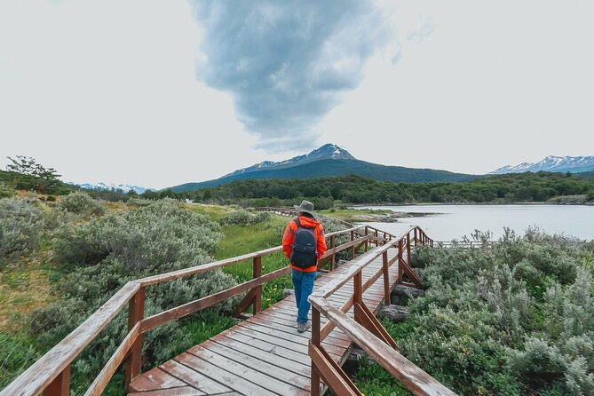
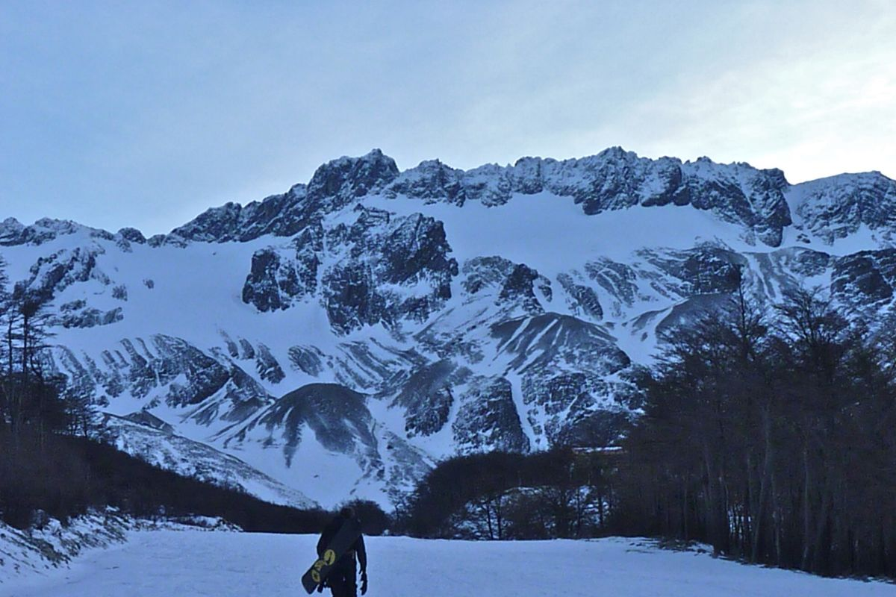
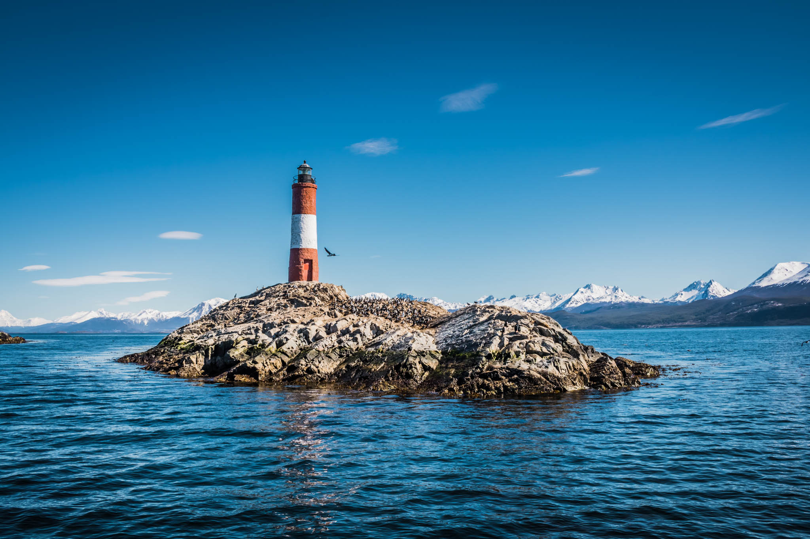

Parque Nacional Tierra del Fuego
O Parque Nacional da Terra do Fogo (em espanhol Parque Nacional Tierra del Fuego) é um parque nacional argentino com uma área de 68.909 hectares situado na Terra do Fogo, no extremo sudoeste da parte da ilha, 12 km a oeste da cidade de Ushuaia, estendendo-se desde a Sierra de Injoo Goiyin (ou de Beauvior), a norte do lago Fagnano, até à costa do canal de Beagle. Apenas 2000 ha do extremo meridional estão abertos ao público, estando a restante área catalogada como "reserva estricta". O Tren del Fin del Mundo (comboio do fim do mundo) é o meio mais usual para os turistas visitarem o parque, partindo da estação "del Fin del Mundo", 8 km a oeste de Ushuaia. Esta é a parte final da linha que unia a prisão de Ushuaia aos campos de trabalho situados na zona que hoje pertence ao parque. O parque foi criado em 1960 através da Ley Nº 15.554.
Glaciar Martial
O Martial atinge mil metros acima do nível do mar e é considerado uma geleira circular, com um formato de anfiteatro. Na verdade, tecnicamente ele é um remanescente glacial, ou seja, os restos de uma geleira que já foi muito maior. O nome homenageia o comandante da expedição científica francesa pela Patagônia Argentina em 1882 e 1883, Louis Ferdinand Martial. Além da beleza da montanha e do glaciar em si, o lugar está cercado por uma paisagem natural deslumbrante, com um rio cristalino de água do degelo, muitas árvores, arbustos de flores e uma vista absurda da cidade e do Canal de Beagle. Esse é um passeio imperdível e pode ser feito por conta própria.
Canal de Beagle
O estreito de Beagle (ou canal de Beagle) é um estreito separando as ilhas do arquipélago da Terra do Fogo, no extremo sul da América do Sul. Além de ligar o oceano Atlântico ao oceano Pacífico, ele separa a Ilha Grande da Terra do Fogo de diversas pequenas ilhas ao sul. Sua parte oriental marca a fronteira entre o Chile e a Argentina, mas sua parte ocidental pertence ao Chile. O estreito de Beagle tem aproximadamente 240 km de comprimento, e sua largura mínima é de cerca de 5 km. A oeste, comunica com o oceano Pacífico pelo canal de Darwin. Apesar de ele ser navegável por grandes navios, existem outras rotas marítimas mais seguras a sul (passagem de Drake) e a norte (estreito de Magalhães). Algumas pequenas ilhas perto da sua extremidade oriental foram objeto, durante muito tempo, de disputas territoriais entre o Chile e a Argentina. Segundo o tratado de 1985, elas pertencem desde então ao Chile (Ilhas Picton, Lennox e Nueva.) As principais zonas habitadas nas margens do canal são Puerto Williams (Chile) e Ushuaia (Argentina). O canal deve seu nome ao navio britânico HMS Beagle, que fez parte de duas missões hidrográficas nas costas meridionais da América do Sul no início do século XIX. Durante a primeira, sob o comando do australiano Philip Parker King, o capitão do Beagle, Pringle Stokes, suicidou-se e foi substituído pelo capitão Robert FitzRoy. A segunda, muitas vezes chamada de a Viagem do Beagle, é célebre porque o capitão FitzRoy levava a bordo Charles Darwin, proporcionando-lhe assim a oportunidade de destacar-se como naturalista amador.
